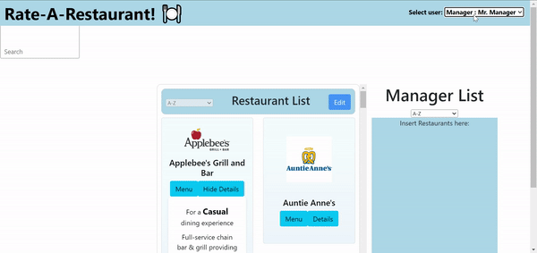
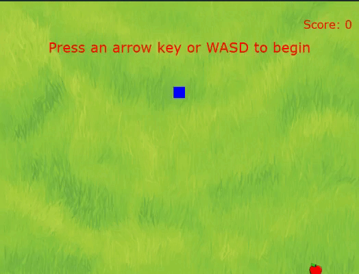

Clock using a binary system to display the real-world time.
Hours, minutes, and seconds are shown as either on or off values.
Made with C, Bash, and Git. Project for CISC210 Introduction to Systems Programming.
Group project showcasing the React framework and its
drag-and-drop functionality. Created for CISC275 Introduction to Software Engineering.

Snake Game
Classic snake style game coded in Python and run using
PyGame. Created in the Thonny Python IDE for CISC108 Introduction to Computer Science.

Custom Shell
Custom shell with built-in commands made using C, Bash,
and Assembly. Utilized Valgrind for memory leak detection.
Created for CISC361 Introduction to Operating Systems.